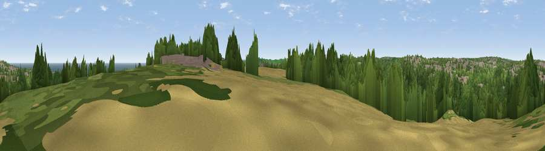

Viewpoint near Hesleden
#20045 in England · top 44% of its area beats it · near HesledenWhere it is
The exact computed spot (NZ 43425 39075). Click the marker for map links.
The view, rendered

A 360° render of this exact spot computed from the terrain model, tree cover and land cover — summer colours, afternoon light, calibrated against photographs of famous viewpoints. Real trees, hedges and buildings will differ in detail.
The panorama
Grey silhouette: terrain skyline in each direction (720 bearings, Earth curvature and refraction included). Dashed green: skyline with trees (+15 m) and buildings (+8 m) as obstacles. Blue strip: how far the ground is visible on each bearing.
Where the view opens
Wedge length = distance to the farthest visible ground on that bearing (vegetation-aware). Rings at 10, 25 and 50 km.
What fills the view
48% woodland · 19% cropland · 13% grassland · 12% built-up · 7% water
Angular shares of the visible panorama (visual magnitude), not map area. Landscape diversity 0.60 (0–1 Shannon).
Key numbers
More beautiful places nearby
The staircase of upgrades: each row has a higher view potential than everything closer. Driving times are estimates from straight-line distance, calibrated against real road routing — check an actual route before setting out.
| Place | Direction | Drive | Score |
|---|---|---|---|
| Viewpoint near Horden | NE · 3 km | ~7 min | 60.5 |
| Viewpoint near Horden | NNE · 3 km | ~7 min | 64.0 |
| Viewpoint near Hesleden | S · 4 km | ~9 min | 66.5 |
| Viewpoint near Easington Colliery | N · 5 km | ~10 min | 69.4 |
| Viewpoint near Elwick | S · 5 km | ~11 min | 70.5 |
| Viewpoint near Easington Colliery | N · 6 km | ~13 min | 74.4 |
| Viewpoint near Houghton-le-Spring | NNW · 13 km | ~24 min | 76.0 |
| Viewpoint near Lazenby | SSE · 25 km | ~40 min | 86.4 |
54.74477, -1.32696 · source: screening · position refined by local search. Computed location — check access rights before visiting.